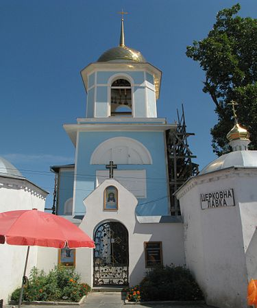
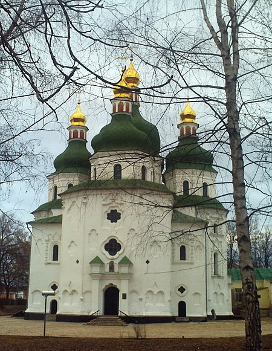
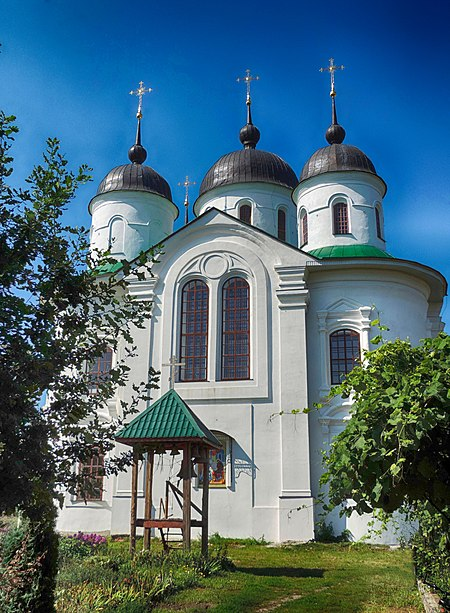
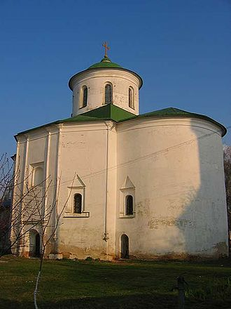
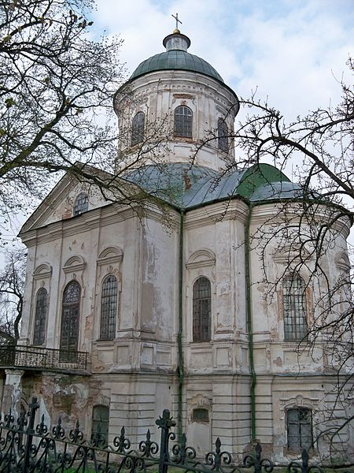
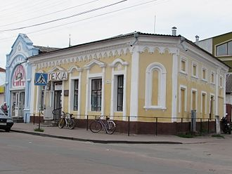

У 2-й половині XVII ст. Ніжин, згідно зі статусом полкового міста, забудовували цегляними спорудами.
Старе місто
Земляні вали, що краями спиралися в береги Остра, ще наприкінці XVIII сторіччя стали затісними для зростаючого міста. Отож коли на початку XIX століття український поміщик князь О.Безбородько почав будувати Ніжинську гімназію вищих наук, місцем для останньої було обрано садибу Безбородьків на правому березі Остра. Річку в межах міста перетворили на канал (1809—1812), береги якого єднав дерев'яний міст, названий згодом Ліцейським
Найдавнішими архітектурними пам'ятками є Миколаївський собор, Благовіщенський собор (1702—1716) та ансамбль грецьких храмів — Михайлівська, Всіхсвятська та Троїцька церкви. Ці храми, а також багато інших культових споруд входять до святинь Ніжинської єпархії та внесені до пам'яток архітектури, що перебувають під охороною держави
Крім культових споруд, у місті збереглося чимало пам'яток часів розквіту торгівлі: мальовничі кам'яниці з кованими дверима й віконницями (більш ранні), крамниці з мезонінами й просторими торговельними залами (пізніші), криті масивні рундуки і класицистичні павільйони на широкій базарній площі, де й досі вирує у базарні дні ніжинський ринок.
У місті є краєзнавчий музей, картинна галерея, музей ім. М. В. Гоголя, єдиний в Україні комплекс поштової станції XVIII століття (в одному з колишніх флігелів розміщений Музей кінної пошти України), музей древньої і рідкісної книги, будівля аптеки ніжинського грека Михайла Лігди.
Графський парк, пам'ятка садово-паркового мистецтва XVIII століття, налічує близько 100 рідкісних порід дерев і кущів.

Ніжинська фортеця (1625 — 1797)

Миколаївський собор

Благовіщенський чоловічий монастир УПЦ

Грецька Михайлівська церква (1719)

Церква Іоана Богослова

Аптека «Полковник Михайло Лігда» (1777)
Троїцька церква (1733)
Адреса: м. Ніжин, Гребінки вул., 19.
Майже впритул до колишнього грецького монастиря, веде на її подвір'я мурована брама з навдивовиж гарними ґратчастими воротами й хвірткою. Перебудована з однобанного храму, церква наприкінці XIX ст. прибрала рис неокласицизму — з високою дзвіницею під шпилем, вишуканим оздобленням.
1888 — проводилися реставраційні роботи. Робота з реконструкції увічнена в ажурному написі, закомпонованому в ґрати огорожі: «При старости Буренко. 1888».
Церква Іоанна Богослова (1752)
Адреса: м. Ніжин, Гоголя вул., 4..
Споруджена в XVIII ст. на колишній Московській вулиці на місці дерев'яної церкви. Центричний храм. Хрещата в плані, однобанна й компактна. Двоповерхова — на першому була тепла церква, на другому — холодна, досить рідкісна межа для української храмової архітектури.
За об'ємно-просторовим вирішенням вона належить до різновиду тетраконхових будівель. Гарні пропорції споруди підкреслено струнким, пірамідальним силуетом з видовженим світловим барабаном, стриманими оздобами в дусі пізнього українського бароко. Фахівці вбачають у цій пам'ятці риси творчості І.Г.Григоровича-Барського.
Церква Покрови Пресвятої Богородиці (1757)
Адреса: м. Ніжин, вул. Покровська, 23..
Будувалася з 1757 по 1765.
Зовні збереглася майже в первісному вигляді, з рисами чистої конструкції, без зайвих прикрас. Будівля тетраконхового типу. Впритул до західного фасаду на початку XIX століття прибудовано двох'ярусну дзвіницю в стилі ампір, її оздоблено 4-колонними портиками й трикутними фронтонами з чітким ритмом зубчиків.
Спасо-Преображенська церква (1757)
Адреса: м. Ніжин, Московська вул., 14..
Споруджена в XVIII ст. на колишній Московській вулиці на місці дерев'яної церкви. Центричний храм. Хрещата в плані, однобанна й компактна. Двоповерхова — на першому була тепла церква, на другому — холодна, досить рідкісна межа для української храмової архітектури.
1857 — із заходу була прибудована тепла церква, яка, як і трьохярусна дзвіниця, не збереглися.
17 травня 1861 — на подвір'ї Спасо-Преображенської церкви, де зупинялася похоронна процесія під час перевозу тіла Т. Г. Шевченка в Україну відбулася панахида.
Під час Другої світової війни в церкві розміщувався збройовий склад гітлерівських військ. При відступі німці безуспішно намагалися підірвати храм.
Введенський жіночий монастир (XVIII—XIX ст.)
Адреса: м. Ніжин, Овдіївська вул., 46..
Собор однойменного жіночого монастиря. Побудований у 1775 році на місці згорілого дерев'яного монастиря. Тут відсутній нижній ярус — підкліть, але на прямокутних раменах є півкруглі абсиди, криті конхами. Так само, як і в Іоанно-Богословській церкві, в цеглі виконано тонко профільовані й оштукатурені тяги й наличники. Лише барабан не круглий, а восьмериком.
Воздвиженська церква (1775)
Вознесенська церква (1805)
Будинок Ніжинської гімназії вищих наук (1805)
Олександрівське грецьке училище (1817)
Грецька церква Всіх Святих (1782)
Адреса: м. Ніжин, Гребінки вул., 19..
Побудована на місці дерев'яного грецького храму первісно за такою ж схемою, що й Михайлівська, але більша за розмірами і оздоблена наприкінці 19 століття гарними класичними портиками доричного ордера. Спаровані колони несуть антаблемент з трикутним фронтоном, кути центрального об'єму оздоблено тричвертними колонами. Високий, прикрашений ордерною системою барабан з видовженими вікнами надає інтер'єру відчуття простору й урочистості, посилене спокійним, рівним освітленням. Має склепінчасті підвали, що використовувалися під склади.
Будинок електростанції (1914)
Будувалася з 1914 по 1916.
Пам'ятка архітектури початку XX століття. Автор споруди, відомий художник і архітектор О. Г. Сластіон надав фасадам характерних рис української народної архітектури: вежа з заломами й широко звисаючим дахом, полив'яні керамічні вставки в дусі народної орнаментики тощо.